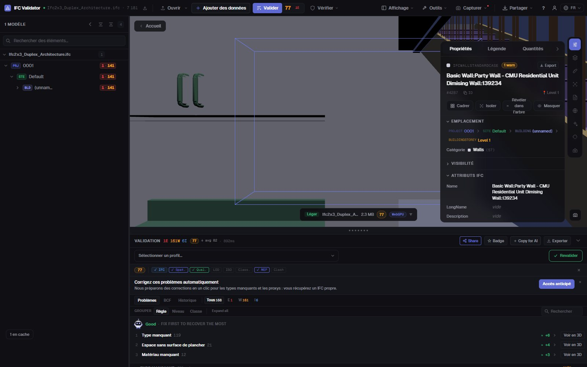
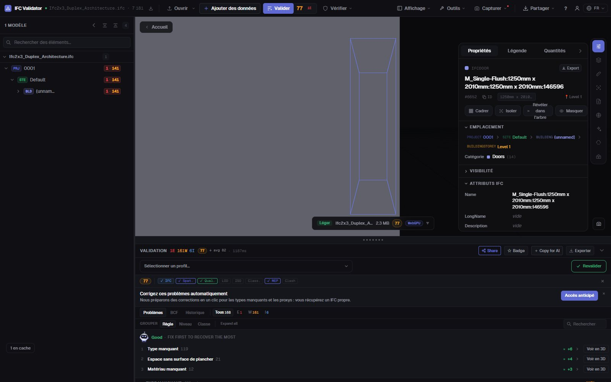

Éditeur IFC gratuit
en ligne, dans le navigateur
Ouvrez un fichier IFC, sélectionnez un élément et corrigez ce qui ne va pas : son nom, son LongName, la valeur d’une propriété, l’étage où il se trouve. Chaque modification peut être annulée, et le résultat s’exporte en IFC standard que votre logiciel BIM rouvre. Le fichier ne quitte pas votre ordinateur.
Modifier un fichier IFC — gratuit →Sans compte · Rien n’est envoyé · Dans votre navigateur · Gratuit

Ce que vous pouvez faire
Modifier un IFC sans Revit, ArchiCAD ni licence
Pour les corrections que vous renverriez sinon à l’auteur : rapides, réversibles et enregistrées en vrai IFC.
Renommer des éléments
Changez le Name et le LongName de n’importe quel élément, ou renommez d’un coup tous les noms en double ou vides avec un modèle ({class}, {storey}, {n}).
Modifier des valeurs de propriétés
Changez la valeur de toute propriété déjà présente dans les jeux de propriétés de l’élément (Pset_WallCommon, Psets personnalisés…).
Corriger les GUID
Régénérez en un clic les GlobalId en double ou mal formés — l’erreur d’export la plus fréquente.
Changer d’étage
Rattachez un élément à un autre conteneur spatial quand il a été exporté au mauvais niveau.
Tout annuler
Chaque modification est une commande avec annuler et rétablir ; le fichier d’origine n’est pas touché avant l’export.
Exporter en IFC ou GLB
Téléchargez la maquette modifiée en IFC (même schéma que l’original) ou en GLB pour le web et la RA.
Captures

FAQ
Questions fréquentes
Existe-t-il un éditeur IFC gratuit en ligne ?
Oui. IFC Viewer Online est gratuit pour tout usage, y compris commercial. Ouvrez la page, déposez un .ifc et modifiez-le dans le navigateur — sans installation, sans compte et sans envoi, car le fichier est lu localement en WebAssembly.
Que peut-on modifier dans un fichier IFC ?
Les noms des éléments (Name, LongName), les valeurs des propriétés existantes, les GlobalId et le conteneur spatial d’un élément. On peut aussi renommer de nombreux éléments d’un coup. Ce n’est pas un outil de modélisation : la géométrie n’est pas modifiée.
L’IFC modifié s’ouvre-t-il dans Revit, ArchiCAD ou Solibri ?
Oui. L’export écrit un IFC standard dans le schéma du fichier ouvert (IFC2x3, IFC4, IFC4x3) avec vos modifications ; tout logiciel qui lisait l’original lit la version modifiée.
Ma maquette est-elle envoyée quelque part ?
Non. Lecture, modification et export se font dans votre navigateur. Les DevTools le montrent : aucune requête ne contient le fichier. Compatible NDA et utilisable hors ligne une fois chargé.
Puis-je vérifier la maquette après modification ?
Oui — la même app vérifie le fichier avec 44 règles de qualité et donne un Health Score de 0 à 100, pour voir la note monter après vos corrections.
Corrigez l’IFC vous-même, en une minute, sans aller-retour.
Renommer · Modifier les propriétés · Corriger les GUID · Annuler · Exporter en IFC
Modifier un fichier IFC — gratuit →